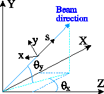

The program utilizes two coordinate systems: a global coordinate frame (X-horizontal, Y-vertical, Z-horizontal) and a local (Frenet-Serret) frame with the s-axis tangent to the beam reference orbit. The x-axis lies in the horizontal plane; the y-axis is normal to the x- and s-axes and is always pointing upwards. Both coordinate frames, i.e. XYZ and xys, are right-handed. The orbit direction in the main coordinate frame is determined by the angles $\theta_x$ and $\theta_y$, as shown in the figure below. It should be noted that this convention implies that when the net bending $\theta_y$ caused by vertical bends exceeds 90 degrees, the direction of vertical axis y reverses. Since the xys frame must remain right-handed, there is a corresponding reversal in the orientation of the x-axis. Note that the axis orientation reversal affects the signs of some of the transfer matrix elements; it also causes a sign inversion of the dispersion functions.
The element roll angle is expressed in the local coordinate frame (xys). A positive roll angle (as it has to be in a right-handed system) rotates from x toward y (clockwise). A zero dipole roll angle corresponds to a dipole field along the positive y axis (i.e. in the vertical plane). For a positive bend field, the bending is toward the negative side of the x-axis.
